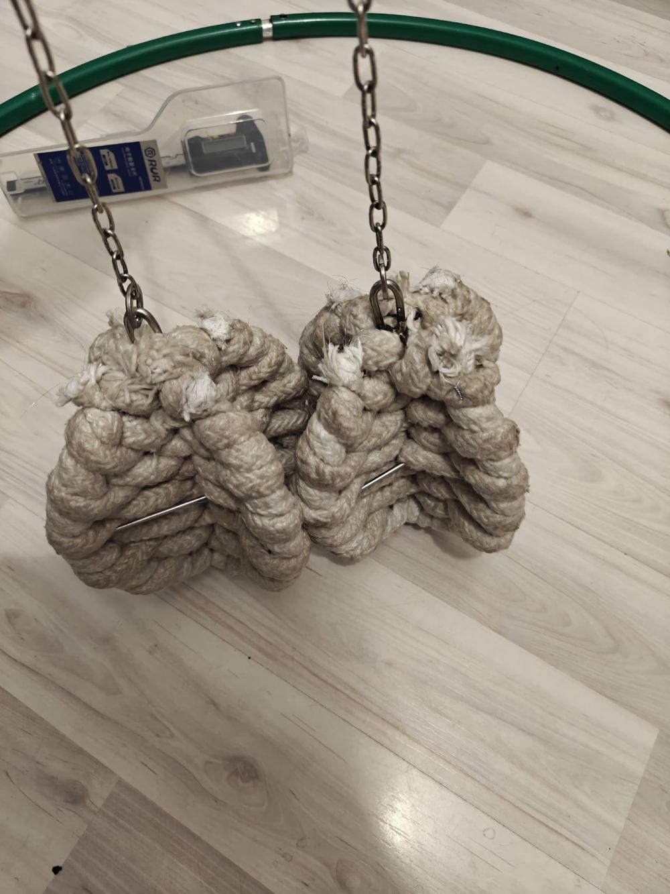

Мастерская, где живут свои плетения
«Мастерская РА» — мастерская огненного реквизита из Санкт-Петербурга. С 2018 года мы делаем огненный реквизит для файр-шоу, уличных театров и артистов по всей России: пои, веера, роупдарты, кометы, стаффы, факелы и сценические конструкции.
Мы не копируем чужие схемы: многие плетения — изисы, манкифисты, перекрёстные мунблейзы — родились прямо здесь, за верстаком. Фитили вяжем из армированного керамического волокна и кевлара, каркасы гнём из нержавеющего прутка, а каждую петлю прошиваем вручную.
Каждое изделие проверяем сами — и не отпускаем, пока не будем уверены: этот реквизит переживёт не один сезон и не один бернаут.

🧵 Материалы
Армированное керамическое волокно (шнуры 10–15 мм, ленты 30–75 мм), кевлар, нержавеющие прутки и цепи, дюраль Д16Т, бук. Ничего лишнего — только то, что держит огонь и время.
🔧 Кастом
Длина верёвки под рост, вес фитиля, размер каркаса, тип цепи (цинк/нержавейка), кожаные или синтетические петли, цвет обмотки. Напишите — сделаем под вас.
🚚 Доставка
Отправляем по всей России: СДЭК, Boxberry, Почта. Отправка в течение 1–2 дней, кастом — 3–7 дней. По СПб возможен самовывоз. От 7 000 ₽ — доставка бесплатно.
🛡️ Надёжность
Скрытые верхние шайбы, приваренные гайки, маленькие анкера — всё, чтобы меньше обжигаться и больше крутить. Ремонт швов в течение 6 месяцев — бесплатно.
💬 На связи
Отвечаем быстро — в среднем за 15 минут. Подскажем по выбору первого реквизита, технике безопасности и топливе.
🔥 Безопасность
К каждому заказу прикладываем памятку: как размачивать фитили, какое топливо выбирать и как хранить реквизит между выступлениями.
Связаться с мастерской
Мы в Санкт-Петербурге, работаем по всей России. Быстрее всего — написать в VK или WhatsApp.
Остались вопросы?
Откройте чат в правом нижнем углу — демо-помощник «Искра» ответит на частые вопросы, а живой мастер подключится в VK.